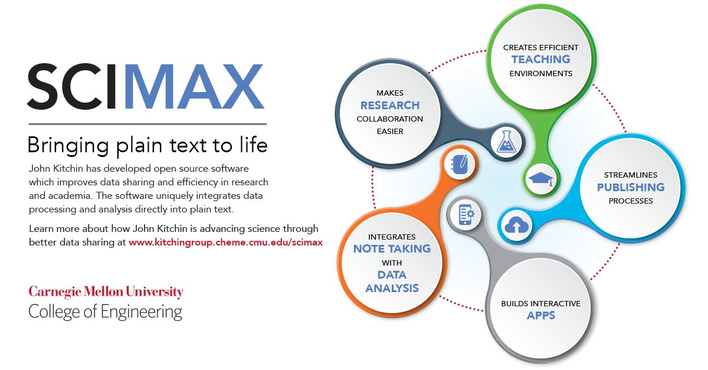

The Kitchin Research GroupChemical Engineering at Carnegie Mellon University |
Table of Contents
scimax
bringing plain text to life
Scimax is a set of open-source software tools to integrate narrative text with data, code, figures, equations, tables and citations. Scimax brings plain text to life by making it functional and interactive. With scimax you can embed and run code directly in your documents, and capture the output in your document. You can embed data in your documents with narrative text that explains what it is, and then use the document as a data source for analysis. You can easily convert documents written with scimax to HTML, LaTeX, PDF, even MS Word.
Scimax builds on Emacs, org-mode and programming tools to provide a rich authoring environment for writing, programming, research and teaching.

1 Scientific research
We use scimax as an electronic notebook in all our research. scimax lets us integrate narrative text with citations about what we are trying to do with data and code to perform analysis. scimax integrates project/task management tools and distributed version control tools to enable collaboration in our group.
You can see a precursor to scimax in this presentation at Scipy-2013.
2 Scientific publishing
We write all our scientific manuscripts using scimax. After the documents are written, we use scimax to convert them to the format required by publishers (usually LaTeX). These manuscripts and their supporting information files contain all the data, code and analysis we used in the papers so others can see what we did, and even reuse the data/code.
- hallenbeck-2013-effec-o2 Experimental
- miller-2014-simul-temper Combined experimental and computational
- curnan-2014-effec-concen Computational
- xu-2014-probin-cover Computational
- xu-2014-relat Computational
- mehta-2015-ident-poten Computational
- boes-2015-estim-bulk Combined experimental and computational
- boes-2015-estim-bulk-si
- kitchin-2015-examp Perspective
- kitchin-2015-data-surfac-scien Perspective
- xu-2015-accur-u Computational
- xu-2015-linear-respon Computational
- xu-2015-relat Computational
- xu-2015-tunin-oxide Computational
- kitchin-2016-autom-data Publishing and data-sharing
We have written two large electronic books using scimax. These books integrate narrative discussion with code, data, equations, figures, tables and citations. In the native format, they are interactive and functional.
Finally, this blog is written using scimax.
3 Build interactive apps
We have built two significant apps on top of the tools in scimax.
3.1 org-ref
org-ref is a bibliography management tool similar to Endnote. It provides tools to insert citations and bibliographies in documents. The citations are hyper-functional, and connect your documents to external search engines, locally stored pdf files, etc.
3.2 contacts
This is a contact manager for scimax. It allows you to quickly find contacts, email them, call them, etc. It can mine your email database for contact information
4 Teaching
techela is a tool based on scimax that acts like a content management system for teaching a class. It provides a framework to distribute, collect, grade and return assignments and course materials. techela provides an integrated gradebook, and communication tools.
Here is a video of this tool in the precursor to scimax.
Bibliography
- [hallenbeck-2013-effec-o2] "Hallenbeck & Kitchin, Effects of \ceO_2 and \ceSO_2 on the Capture Capacity of a Primary-Amine Based Polymeric \ceCO_2 Sorbent, "Industrial & Engineering Chemistry Research", 52(31), 10788-10794 (2013). link. doi.
- [miller-2014-simul-temper] Spencer Miller, Vladimir Pushkarev, Andrew, Gellman & John Kitchin, Simulating Temperature Programmed Desorption of Oxygen on Pt(111) Using DFT Derived Coverage Dependent Desorption Barriers, Topics in Catalysis, 57(1-4), 106-117 (2014). link. doi.
- [curnan-2014-effec-concen] Curnan & Kitchin, Effects of Concentration, Crystal Structure, Magnetism, and Electronic Structure Method on First-Principles Oxygen Vacancy Formation Energy Trends in Perovskites, The Journal of Physical Chemistry C, 118(49), 28776-28790 (2014). link. doi.
- [xu-2014-probin-cover] Zhongnan Xu & John Kitchin, Probing the Coverage Dependence of Site and Adsorbate Configurational Correlations on (111) Surfaces of Late Transition Metals, J. Phys. Chem. C, 118(44), 25597-25602 (2014). link. doi.
- [xu-2014-relat] Zhongnan Xu & John Kitchin, Relating the Electronic Structure and Reactivity of the 3d Transition Metal Monoxide Surfacesq, Catalysis Communications, 52, 60-64 (2014). link. doi.
- [mehta-2015-ident-poten] Prateek Mehta, Paul Salvador & John Kitchin, Identifying Potential \ceBO2 Oxide Polymorphs for Epitaxial Growth Candidates, ACS Appl. Mater. Interfaces, 6(5), 3630-3639 (2015). link. doi.
- [boes-2015-estim-bulk] Jacob Boes, Gamze Gumuslu, James Miller, Andrew, Gellman & John Kitchin, Estimating Bulk-Composition-Dependent \ceH2 Adsorption Energies on \ceCu_xPd_1-x Alloy (111) Surfaces, ACS Catalysis, 5, 1020-1026 (2015). link. doi.
- [boes-2015-estim-bulk-si] Jacob Boes, Gamze Gumuslu, James Miller, Andrew, Gellman & John Kitchin, Supporting Information: Estimating Bulk-Composition-Dependent \ceH2 Adsorption Energies on \ceCu_xPd_1-x Alloy (111) Surfaces, ACS Catalysis, 5, 1020-1026 (2015). link. doi.
- [kitchin-2015-examp] Kitchin, Examples of Effective Data Sharing in Scientific Publishing, ACS Catalysis, 5(6), 3894-3899 (2015). link. doi.
- [kitchin-2015-data-surfac-scien] "John Kitchin", Data Sharing in Surface Science, "Surface Science ", 647, 103-107 (2016). link. doi.
- [xu-2015-accur-u] "Xu, Joshi, Raman, & Kitchin, Accurate Electronic and Chemical Properties of 3d Transition Metal Oxides Using a Calculated Linear Response U and a DFT + U(V) Method, "The Journal of Chemical Physics", 142(14), 144701 (2015). link. doi.
- [xu-2015-linear-respon] Xu, Rossmeisl & Kitchin, A Linear Response DFT+U Study of Trends in the Oxygen Evolution Activity of Transition Metal Rutile Dioxides, The Journal of Physical Chemistry C, 119(9), 4827-4833 (2015). link. doi.
- [xu-2015-relat] Zhongnan Xu & John Kitchin, Relationships Between the Surface Electronic and Chemical Properties of Doped 4d and 5d Late Transition Metal Dioxides, The Journal of Chemical Physics, 142(10), 104703 (2015). link. doi.
- [xu-2015-tunin-oxide] Zhongnan Xu & John R Kitchin, Tuning Oxide Activity Through Modification of the Crystal and Electronic Structure: From Strain To Potential Polymorphs, Phys. Chem. Chem. Phys., 17, 28943-28949 (2015). link. doi.
- [kitchin-2016-autom-data] "Kitchin, Van Gulick & Zilinski, Automating Data Sharing Through Authoring Tools, "International Journal on Digital Libraries", , 1-6 (2016). link. doi.